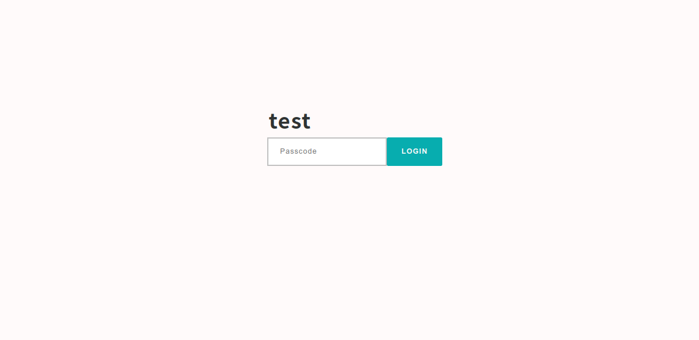
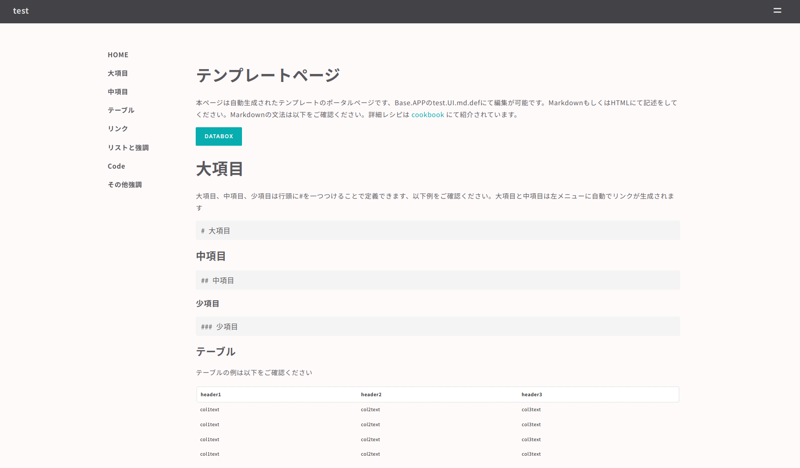
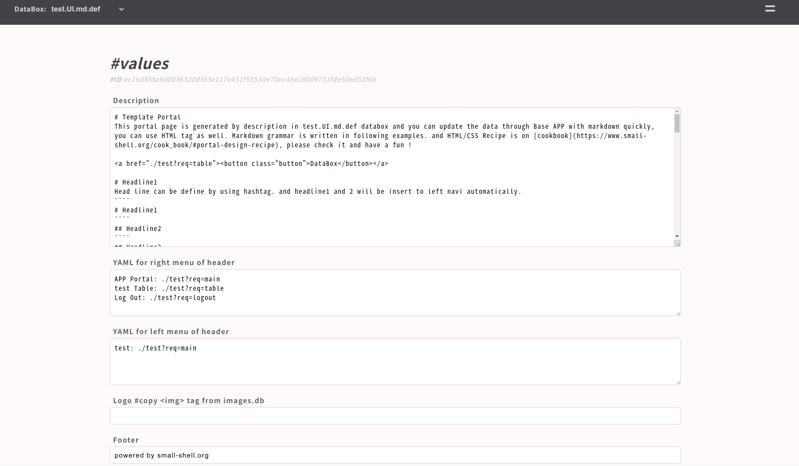
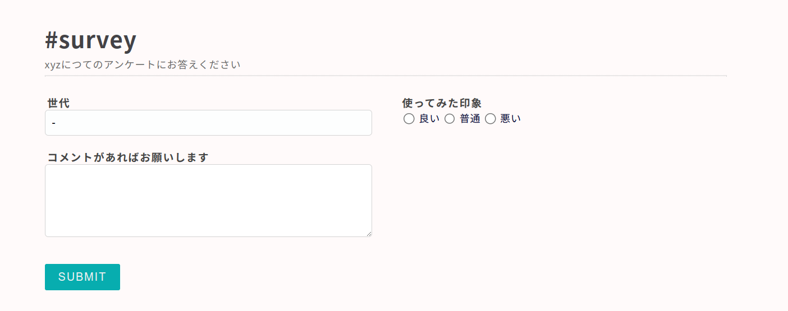
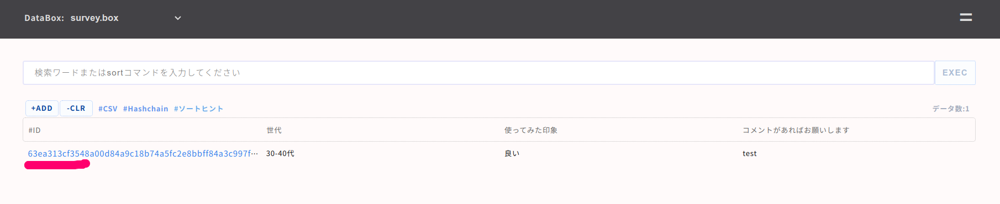

small shell Basic 2
スクラッチアプリ
前章で説明したBase APPがカスタマイズができないtable型のデータ管理に特化したツールであるのに対し、カスタマイズが可能なアプリをsmall shellではScratch APPと呼びます。Scratch APPはアプリをカスタマイズしながらチームで情報共有をより効果的におこなうことを目的に設計されていますが、カスタマイズ自体も段階的に行うことができます。いずれの段階でもScratch APPはチームでのデータ共有に貢献しますので、必ずしもコードの編集までできるようになる必要もありません。
段階的カスタマイズ
1. ポータルページを編集し、データとルール・手続きを同時にアプリに収容する
2. 公開されているテンプレートをインポートしアプリとして利用する
3. small shell frameworkを理解し、コードを直接編集しカスタマイズする
ポータルの活用
portalというのは、入口といったような意味をもつ英語ですが、Scratch APPではログインした際に表示されるトップページのことを指します。Base APPではログインするとそのままtableが表示されますが、tableはDataBoxにはいっているデータを表示することはできてもデータそれ自体の位置づけを説明することができません。Scratch APPではポータルをトップページに表示することで、データの位置づけやそれを管理するルールや手続きを記述することができます。それはインターネット上のホームページのように有用な情報共有の方法を提供します
アプリ生成
それでは早速アプリ生成を生成していきましょう、ちなみにScratch APPはBase APPのうえに生成されますので事前に前章を参照しBase APPを生成してください。以下はtestという名前の共有パスコード（４桁数字）で認証できるアプリを生成しています。primary databoxというのはアプリが管理するデータボックスですが、前章で生成したitem.dbを指定してみましょう
sudo /usr/local/small-shell/adm/gen -app
Type of APP (1.BASE | 2.FORM | 3.SCRATCH): 3
APP Name: test
Type of Authentication (1.shared pass | 2.user key | 3.other | 4.none): 1
Shared Passcode: ****
Primary databox: item.db
Do you want to enable IP whitelisting for this APP? (yes | no): no
APP will be generated by following order, please check it
-----------------------------------------------------------------
APP Type: 3.SCRATCH
APP Name: test
Authentication: shared_pass
IP_whitelisting: no
Access URL: http://***.***.***.****/test
Shared Passcode: ****
-----------------------------------------------------------------
Is it OK? (yes | no): yes
認証方式
Scratch APPでは以下認証方式が実装可能です
- [shared pass] 共用パスコードでアクセス
- [user key] user毎のkeyでアクセス
- [other] 認証方式を自分で定義
- [none] アプリへのアクセスに認証が不要
Note
user keyについてはアプリ毎にユーザーを作成のうえkeyを初期化URLで生成する必要があります。アプリとしてTeam APPを利用する際の例を参考にしてください
ログイン画面の確認
アプリケーションが正常に生成されているはずですので、上記genコマンドの対話にて表示されたAccess URLへアクセスしshared pass (4桁数字)を入力してください 
ポータルの確認
認証が成功するとデフォルトのポータルページが表示されます。このデフォルトのポータルページはマークダウンの文法を含んだテンプレートとしてそのまま利用可能です

マークダウン
マークダウンはHTMLをより即席で生成するための文法ですが、small shellではポータルページの編集に用いることができます。マークダウンの編集はBase APP上で行うことができます。 文法はデフォルトページに表示されていますので記述例をコピーしてつかっていただくのが効率的です。文法の詳細はこちらもご確認くださいMarkdown
Note
ポータルはアプリ毎に定義されますので、 Base APPのテーブル左メニューから"アプリ名.UI.md.def"を選択のうえ編集してください。以下はtestアプリの編集ページリンクです
ポータルページ編集
Base APPで直接ポータルページをデータとして編集していきましょう、それぞれのフィールドを入力してpushボタンを押すとポータル画面が更新されます。 
| フィールド | 記法 | アウトプット |
|---|---|---|
| logo | file | ロゴファイルをアップロードすることができ、左メニューに表示されるようになります |
| Description | markdown or HTML | ポータルのメインページを記述します。markdownとHTMLどちらも併用できるため柔軟なページ編集が可能です |
| YAML for right menu of header | yaml | 右メニュー"="に入れるリンクをyamlで定義します。yaml例は初期値としてあらかじめフィールドに入っていますので参考にしてください。ちなみに値をすべて消すと"="メニュー自体を消せます |
| YAML for left menu of header | yaml | 左寄せのメニューバーに入れるリンクをyamlで定義します。yaml例は右メニュー同様あらかじめフィールドに入っています |
| Footer | text | footerを定義します |
データボックスの追加
スクラッチアプリはgen dialogの際にprimary databoxとして定義したデータボックスのみを標準で管理しますが、subAPPを加えることでデータボックスを追加することができます。以下はsubtestというサブアプリを追加する例です。以下サブアプリではcontact_listというデータボックスを紐付けてみます。
Note
サブアプリは指定のスクラッチアプリに所属するという意味で@をつけて指定してください
sudo /usr/local/small-shell/adm/gen -app
Type of APP (1.BASE | 2.FORM | 3.SCRATCH): 2
APP Name: subtest@test
Subapp Databox: contact_list
テンプレートの利用
small shellの周辺プロジェクトとしてテンプレートがいくつか公開されています、ここではTeam APPをインポートして使ってみましょう。Team APPではチームの共同作業に必要な機能をパッケージ化したsmall shellフレームワークを利用したツールです。チームのカレンダー共有、ファイル共有、タスクの可視化、外部からの問い合わせ受付などが行えます。また、Team APPに管理したいDataBoxを追加することもできます
Team APP install
早速Team APPをインストールしましょう、git cloneした後deploy.shを実行するとDataBoxも自動生成されます
cd $HOME
#git clone https://github.com/naruoken/small-shell-apps
cd small-shell-apps/team_app
sudo ./deploy.sh
# small-shellのディレクトリpathに間違いなければenterを押してください
small-shell root (/usr/local/small-shell): <enter>
Do you want to enable IP whitelisting for this APP ? (yes | no): no
Team APPユーザー追加
Team APPはBase APPのユーザーを引き継ぎませんので、deploy.shのインストラクションに従って作成しましょう。以下ではapp_testというユーザーを作成しています
sudo /usr/local/small-shell/adm/ops app:team add.usr:app_test
ユーザー生成後に、Initialize URL（鍵の初期化URL)が生成れるのでユーザーへURLを案内しましょう。Base APPと同じくInitialize URLへアクセスするとTeam APPへアクセスするための鍵とリンクが生成されます。Initialize URLは一回アクセスすると無効になるので気をつけてください
Team APPログイン
Team APPへログインして右上のeven(=)メニューをクリックするとメニューが展開します。各種機能をお試しください, Team eventやtaskをカレンダーに一元的に表示できるので便利です。Driveを使うとファイル共有も簡単に行えます
データボックスの追加
Teamで管理したいDataBoxを追加したい場合も、容易に追加ができます。Team APPのsubAPPとしてアプリケーションを追加しましょう、3.SCRATCH を選択してapp_nameを定義する際に@teamと付けることでTeam APP配下のsub APPという宣言が可能です。その後追加したいDataBoxを指定しましょう。以下ではitem.dbを追加します
sudo /usr/local/small-shell/adm/gen -app
Type of APP (1.BASE | 2.FORM | 3.SCRATCH): 3
APP Name: item@team
Subapp Databox: item.db
APP will be generated by following order, please check it
-----------------------------------------------------------------
APP Type: 3.SCRATCH
APP Name: item
Parent APP: team
Sub APP Databox: item.db
-----------------------------------------------------------------
Is it OK? (yes | no): yes
フォームの利用の検討
アカウントを持たない外部ユーザーから所定の入力項目をもとにデータを収集し、DataBoxに格納するために外部Formの作成をすることができます。ここでは外部ユーザーからの意見収集のためのアンケートformの作成を例としてご説明します。
アンケートBox作成
初めに収集したいデータを格納するDataBoxを作成しましょう、ここでは架空の製品である"XYZ"についての感想をアンケートとして収集しましょう。その際一意となるkeyは特に想定されないため、primary_keyはhashidとします
sudo /usr/local/small-shell/adm/gen -databox
Note
primary_keyをhashidとすることでよりフラットにデータ管理ができます（primary_keyの値の重複など気にする必要がありません）
Target Databox: survey.box
primary_key(col1): hashid
! ここをhashidとしてください、その後は対話を続けてください
Data box will be generated by following order, please check it
-----------------------------------------------------------------
Databox Name:survey.box
#primary_key
name="hashid"
label="#ID"
type="text"
option="required"
#column2
name="generation"
label="世代"
type="select"
params="10-20代,30-40代,50-60代,70歳以上"
option="required"
#column3
name="impression"
label="使ってみた印象"
type="radio"
params="良い,普通,悪い"
option="required"
#column4
name="comment"
label="コメントがあればお願いします"
type="textarea"
option=""
-----------------------------------------------------------------
Note
入力値をパラメーターとして選べるようにする際、区切り文字として上記例のとおりカンマ,を使って並べて記載することができます。
Warning
対話モードの際にバックスペースを使って日本語を修正すると入力値が壊れるため、できるだけコピペなどで生成してください
フォームの生成
DataBoxの作成に続いて、外部向けの入力フォームを生成しましょう、ここでもgenコマンドをお使いただきます
sudo /usr/local/small-shell/adm/gen -app
アプリケーションタイプとして2.FORMを選択し、名前は仮にsurveyとしましょう。DataBoxとしては先ほど作成したsurvey.boxを指定します
Note
IP whitelistingは接続可能なIPアドレスを制限するかという確認ですが、いったんnoとして作成します
Type of APP (1.BASE | 2.FORM | 3.SCRATCH): 2
Form Name: survey
Target Databox: survey.box
Description of the form : xyzにつてのアンケートにお答えください
Do you want to enable IP whitelisting for this form? (yes | no): no
Select key that must be included in the Form (generation | impression | comment) : generation
Do you want to add more key to the Form? (yes | no): yes
Select additional key that must be included in the Form (impression | comment) : impression
Do you want to add more key to the form ? (yes | no): yes
Select additional key that must be included in the Form (comment) : comment
form will be generated by following order, please check it
-----------------------------------------------------------------
APP type: 2.FORM
Form Name: survey
Target Databox: survey.box
Description: xyzにつてのアンケートにお答えください
IP_whitelisting: no
Included keys: generation,impression,comment
Access URL: http://{サーバアドレス}/survey
-----------------------------------------------------------------
Is it OK? (yes | no): yes

BaseAPPで登録されたデータを見てみると、一意のIDも自動生成されていることが確認できます。 
その他操作
Scratch APPへのtag追加
スクラッチアプリのテーブルにタグを追加したい場合、以下コマンドを実行してください
sudo /usr/local/small-shell/adm/ops add.tag:$databox{key{word}} app:$app_name
例.)
sudo /usr/local/small-shell/adm/ops add.tag:tasks{status{on-going}} app:tasks

Initialize URLの再生成
Scratch APPの鍵生成URLを再生成する場合、app:オプションを指定する必要があります
sudo /usr/local/small-shell/adm/ops initialize.usr:test app:$app_name
# team APPを指定する場合
sudo /usr/local/small-shell/adm/ops initialize.usr:test app:team
実環境の構築
small shellの学習環境としてUnixBasic1ではWSLをご紹介しましたが、WSLは外部からのアクセスができないためローカルでの学習にとどまります。アプリをネットワーク上でアクセス可能にするためには以下2つの方法をおすすめします。
Macの利用
small shellはMac上でも動かすことができます、公式サイトのQuick start on MACを参照してMacのターミナル上で環境を構築してください。公式サイトは英語での記載となっていますので、chromeの翻訳ツールで翻訳していただくことをおすすめします。
Cloudの利用
Macの利用は主にキャンパスやオフィスなどのプライベートネットワークでの利用を想定しますが、インターネット上からはアクセスできません。small shellをインターネット上から利用可能にする場合、各種クラウドベンダーのサービスを利用してください。国内ベンダーが提供する各種VPSやAWS, Linodeなどの クラウドサービスを利用していただくことをお勧めします